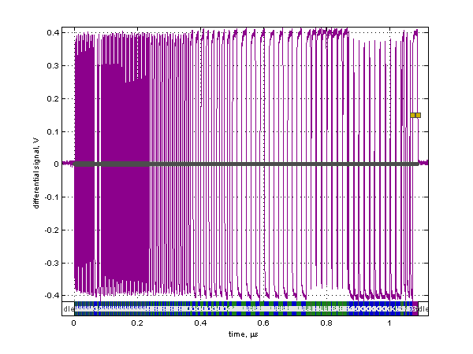
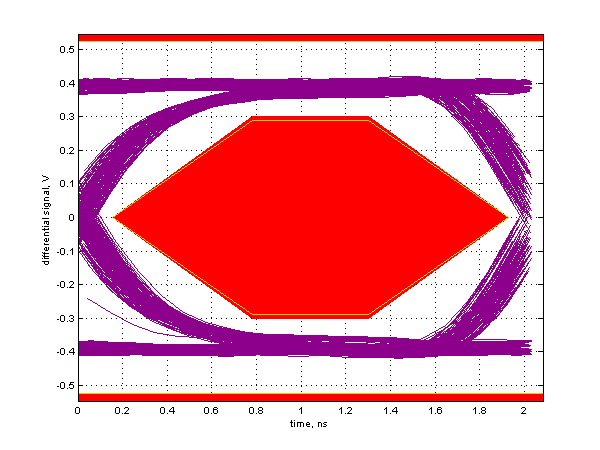

Near End High Speed Signal Quality Test
Results for HS_H0P1_XPBUSY1
For details on test setup, methodology, and performance criteria, please consult the signal quality test description at the USB-IF Compliance Program web page.
Required Tests
- Overall result: pass!
- Signal eye:
eye passes
- EOP width: 7.95 bits
EOP width passes
- Measured signaling rate: 480.0655 MHz
signal rate passes
- Rising Edge Rate: 1039.68 V/us (615.57 ps equivalent risetime)
passes
- Falling Edge Rate: 1016.75 V/us (629.45 ps equivalent risetime)
passes
Additional Information
- Consecutive jitter range: -107.486 ps to 103.103 ps, RMS jitter 45.520 ps
Paired JK jitter range: -47.225 ps to 38.934 ps, RMS jitter 13.935 ps
Paired KJ jitter range: -41.650 ps to 36.138 ps, RMS jitter 13.176 ps
Signal Data and Eye


Tracking Information
- Analysis call: usbsigcheck('C:\Documents and Settings\LeCroyUser\Desktop\Desktop\A9126\new_evb\USB\205\HS\HS_H0P1_XPBUSY1.tsv', 'hsne', 1)
- Testing script version: 2.22.03